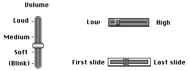

Legacy Document
Important: The information in this document is obsolete and should not be used for new development.
Important: The information in this document is obsolete and should not be used for new development.


Other Controls
If you need controls other than the standard ones provided by the Control Manager,
you can design and implement your own. Typically, the only types of controls you
might need to implement are sliders or dials. Sliders and dials (which differ only in appearance) are similar to scroll bars in that they graphically represent a range of
values that a user can set. Use an indicator--such as a sliding switch or a dial needle--
to indicate the current setting for the control and to let the user set its value. (For scroll bars, the scroll box is the indicator.)If you want to display a value not under the user's direct control (for example, the amount of free space remaining on a disk), you should use a status bar or other type
of graphic instead of a slider or dial.Figure 5-7 illustrates several custom controls, which are used for purposes such as setting the speaker volume, the gray-scale saturation level, and the relative position
of a slide within a presentation. As in this figure, be sure to include meaningful labels
that indicate the range and the direction of your control's indicator.Figure 5-7 Custom slider controls

A scroll bar is a slider representing the entire contents of a window, and the user uses the scroll box to move to a specific location in that content. Don't use scroll bars to represent any other concept (for instance, changing a setting). Otherwise, your departure from the consistent Macintosh interface might confuse the user.